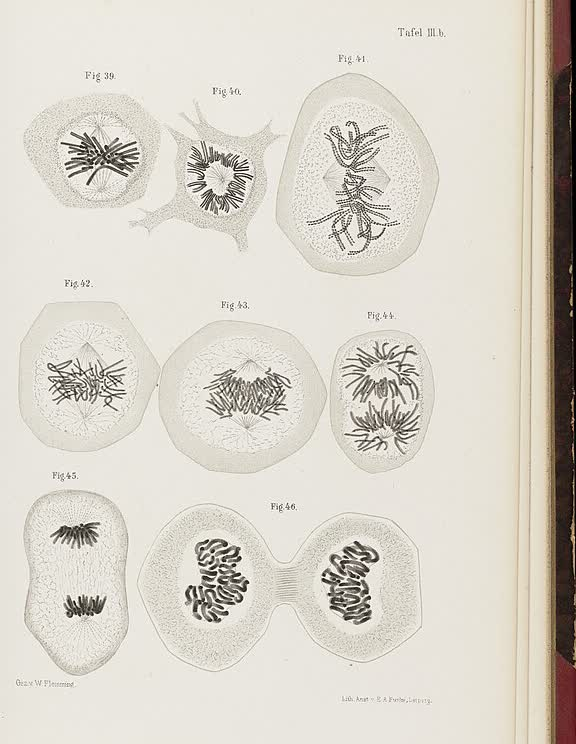

细胞的增殖（上）：细胞周期与有丝分裂
本期导读
细胞的增殖（上） · 各时期特点与数目变化

视频原话 · 导读3 句
- 同学们好！这节课梳理人教版必修一第六章第一节的上半部分——细胞周期与有丝分裂。8.6s
- 高考常考细胞周期的判断、有丝分裂各时期的特点，以及染色体和核DNA数目的变化。8.4s
- 我们按七个考点梳理，每个考点都讲清楚怎么考、怎么做。5.6s
细胞不能无限长大01#
细胞增殖：通过细胞分裂增加细胞数量，是生物体生长、发育、繁殖和遗传的基础
不能无限长大
体积越大 → 相对表面积越小 → 物质运输效率越低
增殖的过程与方式
物质准备 ＋ 细胞分裂
真核细胞：有丝分裂、无丝分裂、减数分裂
易错
细胞也不是越小越好：要容纳酶、核糖体等物质和结构
视频原话4 句
- 考点一，细胞增殖。细胞通过细胞分裂增加细胞数量，叫细胞增殖，它是生物体生长、发育、繁殖和遗传的基础。11.9s
- 细胞不能无限长大：细胞体积越大，相对表面积越小，物质运输的效率就越低。7.7s
- 细胞增殖包括物质准备和细胞分裂两个连续的过程；真核细胞的分裂方式有有丝分裂、无丝分裂和减数分裂。10.8s
- 易错：细胞也不是越小越好，细胞内还要容纳酶、核糖体等物质和结构。7.1s
细胞周期的概念02#
连续分裂的细胞，从一次分裂完成时开始，到下一次分裂完成时为止
分裂间期（在前）
约占 90%～95%，时间长
分裂期（在后）
前期、中期、后期、末期
易错
只有连续分裂的细胞有细胞周期；高度分化的细胞、进行减数分裂的细胞没有
视频原话3 句
- 考点二，细胞周期。连续分裂的细胞，从一次分裂完成时开始，到下一次分裂完成时为止，为一个细胞周期。10.7s
- 一个细胞周期包括分裂间期和分裂期，间期在前，大约占细胞周期的90%～95%。9.1s
- 易错：只有连续分裂的细胞才有细胞周期，如分生区细胞；高度分化的神经细胞、进行减数分裂的细胞没有细胞周期。11.3s
细胞周期的表示03#
解题方法
一个细胞周期：先间期、后分裂期，两段首尾相接
视频原话3 句
- 考点三，细胞周期的表示方法。线段图：间期长、分裂期短，一个周期要从间期开始，到分裂期结束。10.7s
- 扇形图：按顺时针方向，从间期到分裂期，回到起点为一个细胞周期。7.2s
- 解题方法：判断哪段是一个细胞周期，看先间期、后分裂期，而且两段首尾相接。8.5s
分裂间期04#
- DNA 复制和有关蛋白质的合成，细胞适度生长
- 核 DNA 加倍，染色体数目不变
易错
间期是染色质状态，看不到染色体；间期不属于分裂期
视频原话3 句
- 考点四，分裂间期。为分裂期进行活跃的物质准备，完成DNA分子的复制和有关蛋白质的合成，同时细胞有适度的生长。12.6s
- DNA复制后，每条染色体含有两条姐妹染色单体，核DNA数目加倍，但染色体数目不变。9.1s
- 易错：间期遗传物质呈染色质状态，显微镜下看不到染色体；间期不属于分裂期的前期。9.1s
前期和中期05#
易错
赤道板是假想的平面，不是真实结构；末期出现的细胞板才是真实结构
视频原话3 句
- 考点五，前期和中期，以高等植物细胞为例。前期：染色质丝螺旋化成为染色体；核仁解体、核膜消失；细胞两极发出纺锤丝，形成纺锤体。14.8s
- 中期：纺锤丝附着在着丝粒两侧，着丝粒排列在赤道板上；染色体形态稳定、数目清晰，是观察染色体的最佳时期。11.6s
- 易错：赤道板是一个假想的平面，不是真实结构；末期出现的细胞板才是真实结构。8.1s
后期和末期06#
口诀
膜仁消失显两体，形定数晰赤道齐，点裂数增均两极，两消两现重开始
视频原话3 句
- 考点六，后期和末期。后期：着丝粒分裂，姐妹染色单体分开成为两条染色体，移向细胞两极，染色体数目加倍。11.9s
- 末期：染色体变成染色质丝，纺锤丝消失，出现新的核膜和核仁；植物细胞在赤道板位置出现细胞板，扩展形成新的细胞壁。12.4s
- 解题方法：记口诀——膜仁消失显两体，形定数晰赤道齐，点裂数增均两极，两消两现重开始。9.6s
染色体和DNA变化07#
| 项目 | 间期 | 前期 | 中期 | 后期 | 末期 |
|---|---|---|---|---|---|
| 核 DNA | 2N → 4N | 4N | 4N | 4N | 4N → 2N |
| 染色体 | 2N | 2N | 2N | 4N | 4N → 2N |
| 染色单体 | 0 → 4N | 4N | 4N | 0 | 0 |
解题方法
有染色单体时：染色单体数 ＝ 核 DNA 数 ＝ 2 × 染色体数；无染色单体时：核 DNA 数 ＝ 染色体数
视频原话4 句
- 考点七，数目的变化，设体细胞染色体数为2N。核DNA：间期复制，由2N变为4N；末期细胞一分为二，恢复为2N。12.4s
- 染色体：后期着丝粒分裂，由2N变为4N；末期恢复为2N。6.6s
- 染色单体：间期复制后出现，为4N；后期着丝粒分裂后消失，变为0。7.4s
- 解题方法：有染色单体时，染色单体数 = 核DNA数 = 染色体数的2倍；没有染色单体时，核DNA数等于染色体数。11.9s
易错速查✓
先自己判断，再点按钮查看对错与解析。
- 1细胞越大，物质运输效率越高说法错误：细胞越大，相对表面积越小，效率越低
- 2神经细胞具有细胞周期说法错误：只有连续分裂的细胞才有细胞周期
- 3细胞周期中分裂间期在前、所占时间长说法正确。
- 4间期DNA复制后染色体数目加倍说法错误：核DNA加倍，染色体数目不变
- 5中期染色体的着丝粒排列在细胞板上说法错误：排列在赤道板上
- 6后期着丝粒分裂，染色单体数变为0说法正确。
膜仁消失显两体，形定数晰赤道齐！
视频原话 · 易错速查5 句
- 最后，用六道判断题检验一下。3.6s
- 判断一？错，细胞越大，运输效率越低。判断二？错，神经细胞不再分裂。8.9s
- 判断三？对。判断四？错，染色体数目不变。6.2s
- 判断五？错，是赤道板。判断六？对。5.7s
- 七个考点串成一条线：间期复制，前中后末，数目跟着着丝粒走。我们下期再见！8.4s
图片来源
图片来源：Wikimedia Commons —— Walther Flemming / Wellcome Collection《Zellsubstanz, Kern und Zelltheilung》CC BY 4.0（已裁切）
Walther Flemming / Wellcome Collection, CC BY 4.0